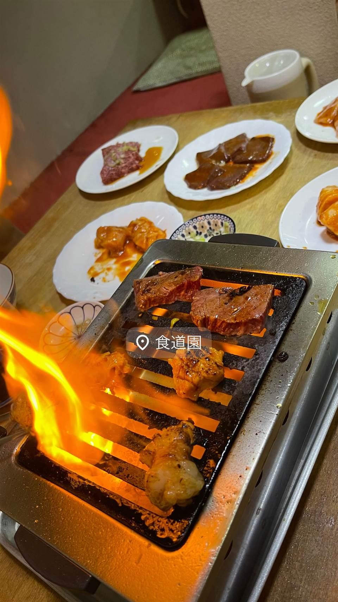
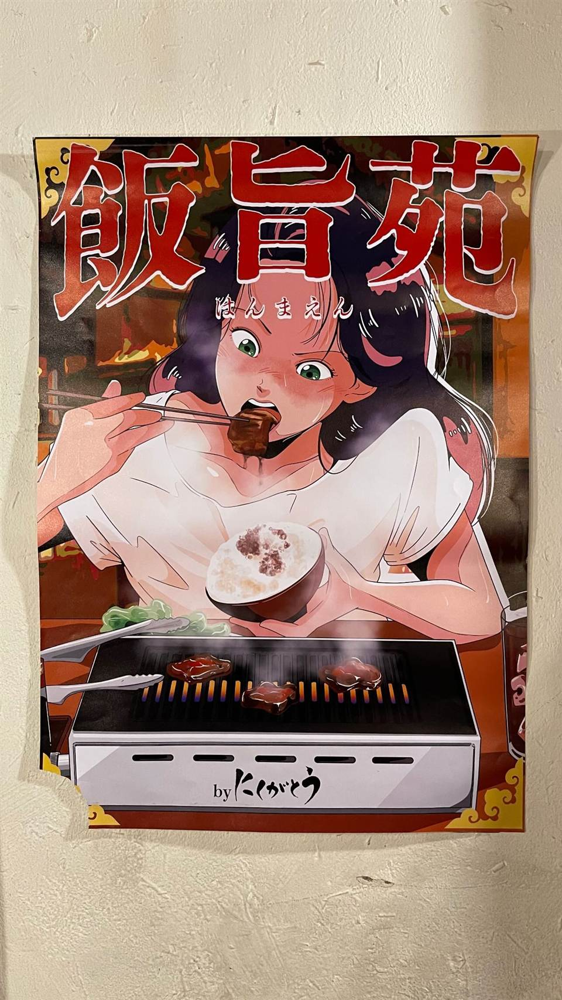

★11びーふてい 中目黒店
1988年創業、和牛一頭買いで味わう名物ガツン焼き
びーふてい中目黒店
びーふてい中目黒店は1988年創業、和牛を一頭買いすることで多彩な部位をリーズナブルに味わえる「元祖一等買い」の焼肉・しゃぶしゃぶ専門店。食べログ焼肉百名店に2020・2021・2023年と選出され、中目黒駅近くで長く親しまれている。
TRIVIA
へえ、という話
- 「元祖一等買いの焼肉店」を掲げ、市場での目利き仕入れにこだわる
- 1988年創業で30年超の歴史を持つ老舗
REVIEWS
みんなの声
「良質な黒毛和牛とコスパの良さ」に注目
- しっかりとした肉質の黒毛和牛ステーキやしゃぶしゃぶの美味しさを評価する声が多い
- ランチは2000円程度で上質な肉を楽しめコスパが良いという評価が多い
- 外観がチェーン店のような印象で高級感にはやや欠けるという声もある
- ランチタイムは客足が途切れず混み合うことがあるという声がある
食べログ 口コミ616件
| 創業 | 1988年11月8日創業 |
|---|---|
| 系譜 | 「元祖一等買い」を掲げる和牛一頭買いの焼肉・しゃぶしゃぶ専門店。中目黒店が本店。他系列店の情報は確認できず。 |
| 看板 | 和牛一頭一通りコース（9,000円）、名物「ガツン焼き」 |
| こだわり | 和牛を一頭買いすることで多様な部位をリーズナブルに提供。店内に部位表を掲示し、部位ごとに食べ方やタレを変える工夫をしている。 |
| 掲載・受賞 | 食べログ「焼肉 百名店」2020年・2021年・2023年選出。 |
| 予算 | 夜 ¥6,000～¥7,999 |
| 場所 | 中目黒駅 東京都目黒区中目黒 |
| 注意 | 26席。中目黒駅より徒歩2分。曜日限定で和牛ランチセット2,000円あり。 |
食べたもの：焼肉
NEARBY
近い店・同じ系統の店
-
 ★1
焼肉 西日暮里
味楽亭
1975年創業、家族経営の塩タンとやきにくライス
夜 ¥4,000～¥4,999
★1
焼肉 西日暮里
味楽亭
1975年創業、家族経営の塩タンとやきにくライス
夜 ¥4,000～¥4,999
-
 ★14
焼肉 板橋本町
炭火焼肉ホルモン時楽（板橋本町本店）
遺跡のような分厚さの商標登録済みワイルドタン
夜 ¥5,000～¥5,999
★14
焼肉 板橋本町
炭火焼肉ホルモン時楽（板橋本町本店）
遺跡のような分厚さの商標登録済みワイルドタン
夜 ¥5,000～¥5,999
-

★12 焼肉 横浜周辺 食道園 特許取得の網目状カルビ「華網カルビ」が名物 夜 ¥5,000～¥5,999 -
 ★3
焼肉 町屋
正泰苑 総本店
ザガット東京焼肉部門1位に輝いた熟成タン
夜 ¥6,000～¥7,999
★3
焼肉 町屋
正泰苑 総本店
ザガット東京焼肉部門1位に輝いた熟成タン
夜 ¥6,000～¥7,999
-

★5 焼肉 焼肉 飯旨苑（はんまえん） 紹介がなければ入れない、住所非公開の完全会員制 -
 ★18
焼肉 和泉多摩川
焼肉食道園
肉ソムリエが目利きする希少な牝牛のA5肉
夜 ¥6,000～¥7,999
★18
焼肉 和泉多摩川
焼肉食道園
肉ソムリエが目利きする希少な牝牛のA5肉
夜 ¥6,000～¥7,999